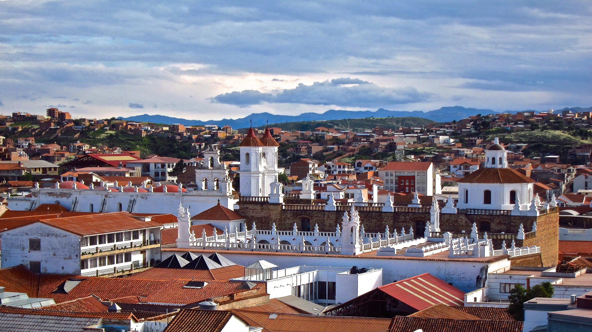
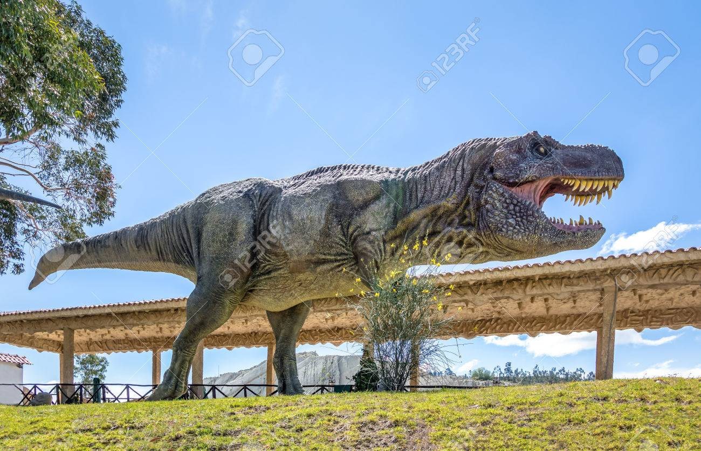

Mi Cuidad

Un poco sobre Sucre
Sucre (quechua: Chuqichaka; aimara: Sukri; guaraní: Sucre), cuyo nombre originario es Chuquisaca, fue llamada La Plata por los españoles. Esta ciudad es la capital histórica y constitucional de Bolivia1nota 1 además de ser sede del Poder Judicial del país. Igualmente es capital del departamento de Chuquisaca. En Sucre se resume la historia de la Confederación de los Charcas, desde sus orígenes más antiguos. Aquí se fundó la Audiencia de Charcas con la llegada de los españoles y finalmente la República de Bolivia, el 6 de agosto de 1825. La ciudad ha sido designada Patrimonio de la Humanidad por la UNESCO en 1991.
Antes de la llegada de los españoles, la ciudad de Chuquisaca (o Choquechaca[cita requerida] según la escritura de antiguos cronistas) tenía autonomía propia con respecto al Imperio inca (los charcas fueron el único pueblo que no pagó el rescate del cautivo Inca).[cita requerida] Según datos del censo 2012, la ciudad cuenta con unos 290 000 habitantes.
Turismo
Patrimonio de la Humanidad
El urbanismo colonial y la arquitectura republicana que caracterizan a Sucre le valen el título de «Patrimonio Cultural de la Humanidad», otorgado en 1991 por la UNESCO. Es la segunda ciudad en Bolivia que recibe esta distinción después de Potosí (1987). Este hecho propicia la creación del Plan de Rehabilitación de las Áreas Históricas de Sucre (PRAHS, 1995), institución local encargada de la gestión del centro histórico, en colaboración con la Agencia Española de Cooperación Internacional para el Desarrollo (AECID). Se potencia el segmento productivo del turismo cultural histórico y se perfila la idea de un nuevo eje turístico entre Sucre, La Paz y Potosí como iniciativa mancomunada de desarrollo regional, al ser las ciudades más antiguas de Bolivia.
Restos paleontológicos
Cal Orcko en Sucre.
Otras atracciones son las huellas paleontológicas del periodo cretáceo halladas a las afueras de la ciudad y Cal Orko es el yacimiento de huellas fosilizadas más grande del mundo hasta el momento, el cual fascina a los paleontólogos y los admiradores de dinosaurios. A tan solo pocos kilómetros de la ciudad de Sucre, a más de 3000 metros de altura en los Andes centrales, está situada en la cantera de la fábrica de cemento más grande de Bolivia.
Hoy en día es un empinado farallón de 70 grados, con una altura hasta de 80 metros y más de un kilómetro de largo testifica sobre este pasado la historia temprana de la tierra. Esto demuestra que la variedad de criaturas era mucho más grande de lo que se suponía hasta ahora. Uno de los descubrimientos más importantes es que los anquilosaurios-cuadrúpedos herbívoros con un caparazón óseo se extendieron hasta Sudamérica. Anteriormente se desconocía su legado fosilizado en el subcontinente.
Las huellas de los titanosaurios son los más importantes para el investigador Meyer. Con un tamaño de hasta 25 metros eran verdaderos gigantes entre los inmensos saurios. Caminaban relativamente lento, a 3 km por hora ―los seres humanos actuales caminan a 4 km/h―, otras especies alcanzaban en cambio una velocidad de 30 km/h. En el caso de un saurio depredador, los investigadores pudieron incluso determinar que cojeaba. Cal´Orko es un lugar de superlativos paleontológicos. Aquí se encuentra la huella de una «caminata de paseo» de más de 350 m de largo dejada por un saurio depredador. La cantidad es también abrumadora, alrededor de 5000 huellas de pisadas, la mayoría bien conservadas.
El 2 de febrero de 2010 se derrumbó gran parte de la muralla que mostraba las huellas de la caminata de los 2 titanosaurios,11 producto de intensas lluvias que azotaron el departamento. Con la caída se pusieron en evidencia otras huellas en las placas más profundas de este farallón.
Parque Cretácico
A 300 metros del farallón de huellas se encuentra el parque Cretácico que brinda la posibilidad de conocer a los protagonistas. Una recreación en uno de los mejores escenarios naturales. Asimismo da la posibilidad de hacer un viaje al inicio de los tiempos a través de un insólito recorrido que muestra a los visitantes, a un titanosaurio con 36 metros de longitud el último de los dinosaurios gigantes.
Los visitantes pueden disfrutar además de una sesión de interesantes documentales relacionados a la época en que los dinosaurios dominaban la Tierra.

Gastronomía
Sucre cuenta con una gran variedad de platos tradicionales, muchas de los cuales varían según la temporada (mondongo para el Día de Todos Los Santos, picana para Navidad, etc.). Entre los platos más populares y típicos están los chorizos chuquisaqueños, el c'kocko de pollo, el picante de pollo, el mondongo chuquisaqueño, la cazuela de maní y muchos otros. La bebida típica es la «chicha criolla».
Sucre es también famosa por sus numerosas empresas dedicadas a la fabricación de chocolates y bombones1213 cuyos productos son muy apreciados por los turistas.
Arquitectura
En su trazado urbano se puede leer la historia de Bolivia, desde el antiguo barrio de la Recoleta, con el trazado sinuoso original de Choquechaca, la ciudad de los charcas (donde la vieja capilla franciscana se levanta sobre el antiguo templo del dios Tanga Tanga), la ciudad renacentista del periodo colonial (actual damero del centro histórico), el ensanche republicano en la circunvalación de la antigua vía de ferrocarriles de los años cuarenta, los barrios obreros del periodo industrial de los años ochenta y los barrios periféricos en torno a los principales ejes interregionales. Su arquitectura hace gala del viejo estilo peninsular o colonial, las fachadas neoclásicas o afrancesadas del periodo republicano, la ciudad jardín del modelo anglosajón en los barrios obreros, algunos exponentes eclécticos (Palacio de La Glorieta), art nouveau, art decó y de arquitectura moderna que intentan encontrar un frágil equilibrio entre lo antiguo y lo moderno.
Ciudad colonial
Sucre sigue el plano de damero, común en las ciudades coloniales, con una red de plazoletas, jardines y parques que otorgan gran armonía al conjunto urbano. Es una de las ciudades de arquitectura hispánica mejor conservadas en América, con calles empedradas, fuentes , iglesias antiguas, casas techadas con tejas de arcilla y con paredes blancas, características del diseño colonial.
A fines del siglo XVIII y a principios del siglo XIX la ciudad de Sucre sufre una transformación en su arquitectura debido al auge de la minería. Estos elementos se mantienen hasta la fecha y representan la imagen característica de la ciudad.
Arquitectura religiosa
Es abundante la arquitectura religiosa, destacándose la iglesia de San Lázaro, la más antigua, construida en 1544; la iglesia la Merced, que cuenta con una hermosa capilla; el convento de San Francisco Javier, y la Catedral, cuya construcción comenzó en 1571 y finalizó un siglo más tarde, donde resalta su bella fachada barroca. El Convento de La Recoleta es otro de los edificios más notables de la ciudad.
Arquitectura civil
En la arquitectura civil se destacan el hospital (1554), el Arzobispado de La Plata (hoy de Sucre), la Universidad de San Francisco Javier de Chuquisaca (1624), la Corte Suprema de Justicia. Además, durante la colonia, Sucre fue sede de la Audiencia de Charcas, la Casa de Gobierno (hasta fines del siglo XIX)] y la Casa de la Libertad (donde se reunió el primer Congreso Constituyente de la Nación y se firmó el Acta de la Independencia). También se puede visitar la Biblioteca Nacional, que conserva más de 100 000 piezas impresas desde 1493, así como muchos otros edificios, los diversos archivos y testimonios históricos. En la Casa de la Libertad, palacete adyacente a la Gobernación, se conserva la primera bandera argentina.
Arquitectura moderna
Actualmente la ciudad ve un cambio muy importante en la arquitectura, la aparición de nuevas construcciones modernas, edificios muy altos, más que todo se puede ver el crecimiento inmobiliario y el auge de las inversiones provenientes de mineros potosinos lo que le han dado a la capital del Estado plurinacional un avance en su desarrollo el cual había sido postergado por varios años, un crecimiento a la par de las ciudades del eje central. Pero más que todo se puede ver una ciudad que está cambiando continuamente.
 Sucre
Sucre
{kind=link}